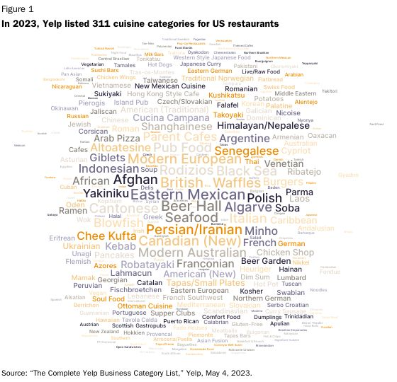

Food Supply and Globalization
The foreign restaurants you see in this country are from globalization. It can even be nachos or french fries that were from other countries. This isn't new either. As long as chefs have been cooking, they've been looking across the globe for ingredients and new ideas.
A supermarket without sushi would seem impossible, especially for younger people. Most of the American population had never tried it over two generations ago. Sushi was not popular in the biggest cities until the 1980s. The popularity then exploded years after that. Just this past year, Americans purchased over 43.7 million servings of sushi at stores, which is more than 50 percent in volume and 72 percent in value since 2019. Kroger also sells more than 40 million pieces of sushi a year.
During the same time period, American restaurants have gone to selling almost every food from every major country on Earth. There are over 311 cuisine categories for restaurants in the United States, which is almost double than it was five years ago (157). When India's economy opened in the 1990s, Domino's was one of the first companies to join their food market and have exploded in sales since. There are special toppings that they put on their pizzas there that the United States didn't do with their pizzas at Domino's.
Pakistan brought in Philly cheesesteaks, and several Pakistani restaurants have featured them on their menus since 1995. After 9/11, the bond between Pakistan and the United States further familiarized Pakistanis with cheesesteak, and many of them have learned how to make it themselves. There is a restaurant called "Philly's Steak Sandwich" in Lahore, which opened after a traveler from Philadelphia showed a video of a cheesesteak to a chef.
This trend has existed for a long time. The silk road had pasta made in China made its way all the way to Italy. Now that transportation and communication are a lot easier, food all over the globe is being shared by different countries.
Click the images below to open them in a new tab.
